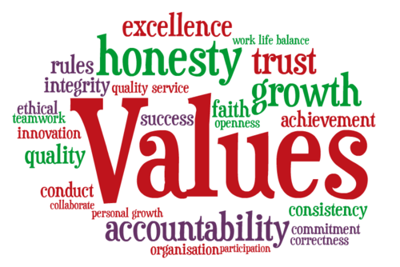

Honesty
I believe honesty is the most important value to me. I take being honest and transparent in everything I do very seriously. Without honesty you are not trustworthy and if you're not trustworthy you will have very little in life and would not be able to hold a close relationship with anyone. Honesty is the foundation of every close relationship in my belief.
Loyalty
I believe loyalty is very important because I want the people I care about to know that I will stand by them no matter what and I want to know that they would do the same for me. Strong relationships are build through trust and commitment, and I want every person close to me that they can always trust me.
Determination
Determination drives me to keep going even when things are hard. I don’t give up easily and always push myself to reach my goals. This applies to every area of my life, but especially when I'm working out and I feel like I can't possibly do another set I push through and give that last set everything I've got. Without determination there can be no success. I was taught from a very young age to be determined and complete every task I start, whether that be in sports, work, or school. When things get hard and seem impossible I just push that much harder.
Hard Working
Similar to determination, I believe you should always be hard working, laziness is never an exuse. If you are capable of completing something I believe you have an obligation to do so. For example every time I go to work I don't always feel like doing anything, in fact I almost never want to be there. Despite this I try to give it everything I have and show my managers that I will always do my best. This builds a trust between me and my managers and they can know that they can always count on me to complete all assigned tasks and give it all my effort.